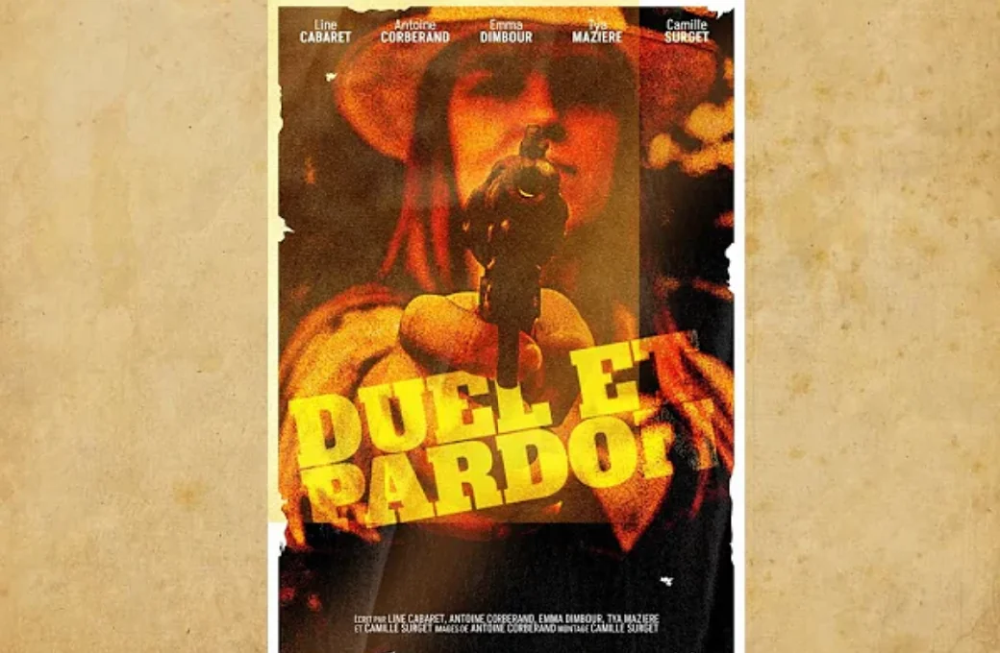
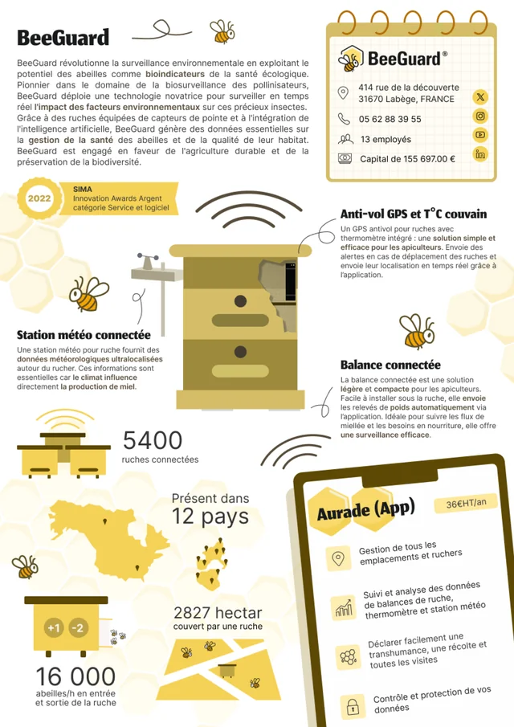
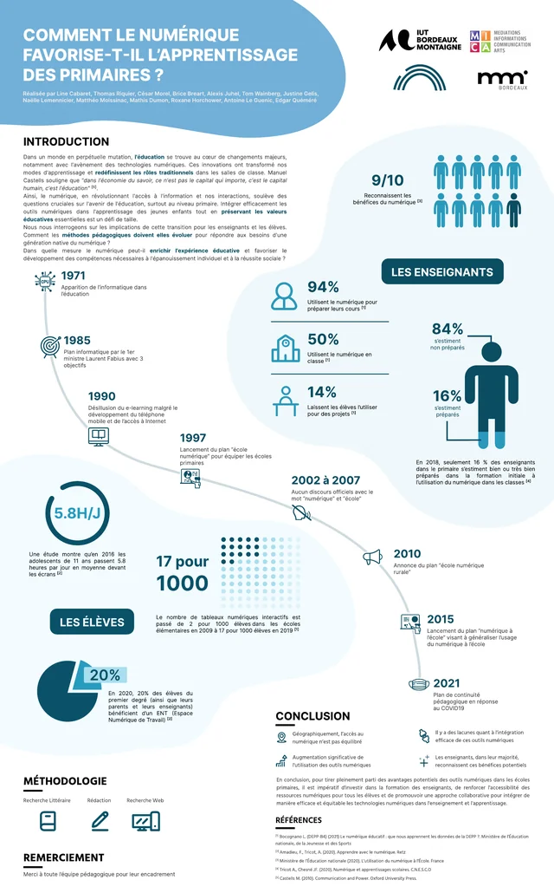

Primal, Montpellier · 2026
Application mobile et plateforme web
Responsable design des applications web et mobile MyIndygo.
Durant mes années de formation, j’ai pu réaliser différents projets, en cours ou bien en stage. Retrouvez-en une sélection ici.
Primal, Montpellier · 2026
Application mobile et plateforme web
Responsable design des applications web et mobile MyIndygo.
Asobo Studio, Bordeaux · 2025
Site web, de Figma à Webflow
Refonte du site web d’Holoforge by Asobo Studio.
Projet MMI · 2023
Site web
Notre but : sensibiliser les collégiens au sujet de l’alcoolisme.
Projet MMI · 2025
Web documentaire
Webdocumentaire sur le monde du drag à Bordeaux.

Court-métrage · 2025
Court-métrage avec pour thème imposé « Western Spaghetti ».
Voir le court-métrage
INFOGRAPHIE · 2024

INFOGRAPHIE · 2024